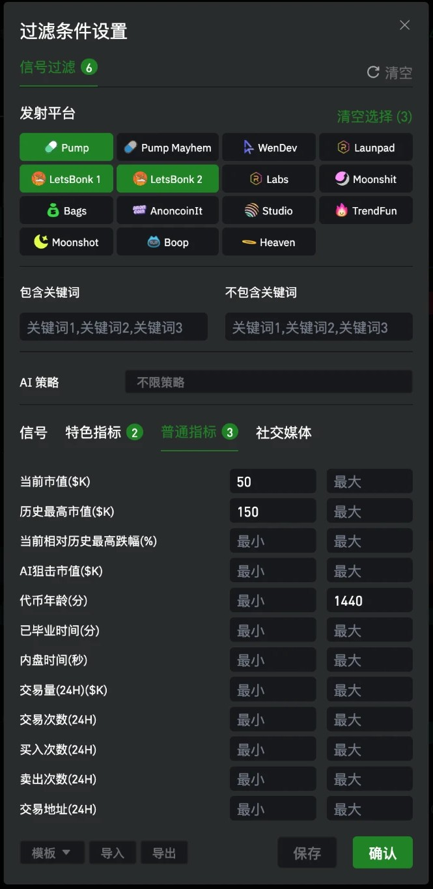

Sub-Topic: The Stage-2 Signal Dashboard
Find tokens that spiked past $150K within the last 24 hours, have since pulled back, but are still holding above $50K — a "stage-2" runner that already had its first move and hasn't died yet.
The Idea
"Stage 1" is the run from zero to the initial peak, which most people miss. "Stage 2" is betting there's a second wave after the pullback from that peak. So the conditions need to lock down three things at once: it really did spike (all-time-high market cap ≥ 150K), it's still alive (current market cap ≥ 50K), and it's still fresh enough (token age ≤ 24 hours). Then use two wallet-structure metrics to filter out manipulated and junk tokens.
Standard Metrics

Current mkt cap ≥ 50 · ATH ≥ 150
Token age ≤ 1440
In "Filter Settings" → Standard Metrics tab, fill in three fields.
Featured Metrics
Screenshot pending · stage2-feature
Switch to the Featured Metrics tab and fill in two wallet-structure conditions.
Full Parameters
Once all six fields are filled in, the "Signal Filter" indicator at the top of the popup will show 6, the Launch Platform row will show Clear Selection (3), and the "Featured Metrics" and "Standard Metrics" tabs will show 2 and 3 respectively — matching these numbers confirms nothing was missed. Click "Confirm" to apply, or "Save" to store it as a template you can load later.
Junk wallet holdings is a hard cutoff: once it's above 5%, you can basically skip the token without even checking the chart. New wallet holdings at 70% is a soft threshold — it's only reliable when read alongside junk wallets, since a high new-wallet share alone isn't necessarily bad (freshly launched tokens naturally have lots of new wallets).
 LogEarn
LogEarn